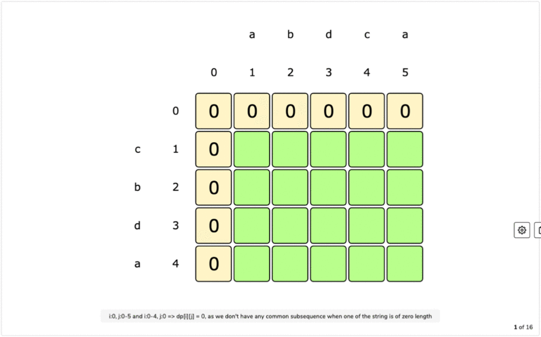

Personalized Recommendation System
Once you have logged in to your user profile, you'll see the home page. Here you'll see various movies and shows which all seem appealing to you. This doesn't just happen to be that way but rather it's due to Netflix's personalised recommendation system. Several algorithms can be used together to simulate this personalisation workflow.
1. Longest Common Subsequence (LCS)
While it may not be used directly in the industries, it can be used for clustering logic that is applied in these systems to group users together based on their watch patterns.
For example, we can compare users and identify the longest shared patterns like Thriller → Crime → Sci-Fi and group them into clusters which could form the basis for sections like "Users like you watched..." recommendation section.

Show LCS Python Code
# Longest Common Subsequence (LCS) for watchlist similarity
# sequences: list of genre lists per user
from functools import lru_cache
def lcs(a, b):
n, m = len(a), len(b)
# DP table
dp = [[0]*(m+1) for _ in range(n+1)]
for i in range(n-1, -1, -1):
for j in range(m-1, -1, -1):
if a[i] == b[j]: dp[i][j] = 1 + dp[i+1][j+1]
else: dp[i][j] = max(dp[i+1][j], dp[i][j+1])
return dp[0][0]
# Example usage:
user_a = ['Action','Sci-Fi','Thriller']
user_b = ['Sci-Fi','Drama','Thriller']
print('LCS length:', lcs(user_a, user_b))
2. A* Search
The vast content across Netflix can be visualised as a graph of different genres and sub-genres as nodes. Here the edges will be the probability that a user transitions to a different genre which can be derived from historical user data. The heuristics for the A* search can be considered as the average ratings of the different genres meaning the higher rated ones would have a lower heuristics cost pulling the path towards them.
The goal here would be to help the user explore new genres outside their comfort zone by finding the smoothest path from their current tastes to new popular content that the user is likely to enjoy without the risk of boring them with something that is too unfamiliar.

You'll potentially examine each edge once (that's the "E" term). Each time you push or pop from the priority queue (up to V times), that costs O(log V).
Show A* Search Python Code
import heapq
def a_star(start, goal, graph, heuristic):
open_set = [(heuristic(start), 0, start)]
costs = {start: 0}
while open_set:
f, g, node = heapq.heappop(open_set)
if node == goal:
return g
for neighbor, weight in graph[node].items():
g2 = g + weight
if g2 < costs.get(neighbor, float('inf')):
costs[neighbor] = g2
f2 = g2 + heuristic(neighbor)
heapq.heappush(open_set, (f2, g2, neighbor))
return float('inf')
# Example graph: transition costs
graph = {
'Comedy': {'Dramedy': 0.3, 'Action': 0.7},
'Dramedy': {'Drama': 0.2},
'Drama': {'Thriller': 0.5},
'Action': {'Thriller': 0.4}
}
# Simple heuristic: zero (Dijkstra)
h = lambda x: 0
print('Path cost:', a_star('Comedy','Thriller',graph,h))
3. PageRank
Although LCS and A* Search may not be directly applicable, PageRank is prominently used in recommendation systems.
In this case, we can model users and shows as a bipartite graph, followed by applying the PageRank algorithm to score content popularity and relevance. Here, titles with better user interaction (rewatches, likes, completion) gain higher ranks, thus boosting their probabilities to appear in the recommendations.
Show PageRank Python Code
# PageRank on a user–title bipartite graph
def bipartite_pagerank(titles, users, damping=0.85, max_iter=100, tol=1e-6):
# Initialize scores uniformly
N = len(titles)
rank = {t: 1.0 / N for t in titles}
for _ in range(max_iter):
new_rank = {}
# Distribute rank from each title to its users, then back to titles
for t in titles:
# Base teleportation
new_rank[t] = (1 - damping) / N
# Contribution from linked users
for t in titles:
share = rank[t] / len(titles[t])
for u in titles[t]:
for t2 in users[u]:
new_rank[t2] += damping * share / len(users[u])
# Check convergence
delta = sum(abs(new_rank[t] - rank[t]) for t in titles)
rank = new_rank
if delta < tol:
break
return rank
# Example usage:
titles = {
'T1': ['U1', 'U2'],
'T2': ['U2', 'U3'],
'T3': ['U3']
}
users = {
'U1': ['T1'],
'U2': ['T1', 'T2'],
'U3': ['T2', 'T3']
}
scores = bipartite_pagerank(titles, users)
print("Title scores:", scores)